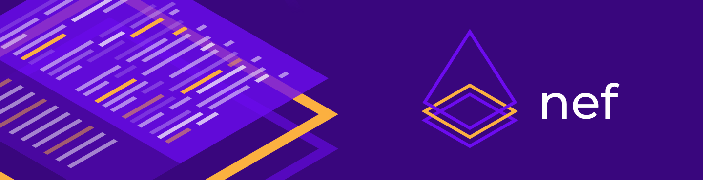

Install in Dash
Install in Dash
 nef Reference
nef Reference



nef, short for Nefertiti, mother of Ankhesenamun, is a toolset to ease the creation of documentation in the form of Xcode Playgrounds. It provides compile-time verification of documentation, exports it in Markdown format that can be consumed by Jekyll to generate websites, and export Carbon snippets for a given Xcode Playground.
nef is inspired by ΛNK for Kotlin and tut for Scala.
Features
💡 Eases the creation of Xcode Playgrounds with support for third party libraries.
💡 Compiles Xcode Playgrounds with support for 3rd-party libraries from the command line.
💡 Builds a Playground Book for iPad with external dependencies defined in a Swift Package.
💡 Generates Markdown project from nef Playground.
💡 Generates Markdown files that can be consumed from Jekyll to create a microsite.
💡 Export Carbon code snippets for a given nef Playground.
💻 Installation
📟 Using Homebrew (preferred)
➜ brew install nef
It will warn you if there is a missing dependency and will provide guidance to install it.
📦 Using Swift Package Manager
nef can be consumed as a library in your macOS project.
.package(url: "https://github.com/bow-swift/nef.git", from: "{version}")
It is an excellent option if you want to use all nef features in your macOS app, even to build new tooling on top of nef.
You can read more about how to use nef library in the nef site.
🔌 Using Xcode Editor Extension
Some of nef features can be used directly in Xcode as an Extension. You can install it directly from App Store or downloading the last binary from the releases section.
Usage
📃 Creating a nef Playground
Xcode Playgrounds are a nice tool for prototyping and trying new concepts. However, third party libraries support is a bit cumbersome to add. One of the goals of nef is to make the creation of an Xcode Playground easier with support for one or more libraries.
By default, nef can create an Xcode Playground with support for Bow, the Functional Programming companion library for Swift.
➜ nef playground

And you can use the following option to specify the name for the nef Playground that you are creating:
➜ nef playground --output ~/Desktop --name LatestBowProject
It will create an Xcode project with support for the latest available version of Bow, named LatestBowProject in your ~/Desktop. If you open this nef playground, you will find an Xcode Playground where you can import Bow or any of its modules, and start trying some of its features.
By default, nef playground will be created for iOS platform. If you need to change it, you can use the --platform option.
➜ nef playground --platform osx
If you need to take advantage of nef in your Xcode Playgrounds, you can transform your Xcode Playground into a nef Playground using the following command:
➜ nef playground --playground <Xcode Playground>
Where <Xcode Playground> is the path to your Xcode Playground.
📣 You can create a nef Playground compatible with any different Bow version, branch or commit; even third-party dependencies
### > Note: The next options are mutually exclusive. ### - `–bow-version
🔨 Compiling a nef Playground
Xcode lets you check for correctness of your Xcode Playground and run it. However, Apple does not provide us commands to compile an Xcode Playground, as they do for building Xcode projects. It is particularly useful in Continuous Integration when you want to verify that your playgrounds are not broken when the libraries you depend on are updated. nef has an option to compile a nef Playground. To do this, you can run the following command:
➜ nef compile --project <nef playground>
If you need to transform your Xcode Playground into a nef Playground you can check Creating a nef Playground section.
Where <nef playground> is the path to nef Playground where your playgrounds are located. Also, you can use the following option with this command:
--use-cache: Use cached dependencies if it is possible, in another case, it will download them. Example:
➜ nef compile --project <nef playground> --use-cache
You can also clean the result of the compilation:
➜ nef clean --project <nef playground>
📲 Creating a Playground Book
Swift Playgrounds is a revolutionary app that makes possible to write Swift code on an iPad. In the latest updates, Swift Playgrounds 3.x has added a new feature: UserModules; it lets you include swift code and make it available across multiple chapters like modules.
nef takes advantage of these new possibilities and advancements in Swift Package Manager to build a Playground Book with external dependencies from a Swift Package specification.
Given a Package.swift like the next one:
// swift-tools-version:5.2
import PackageDescription
let package = Package(
name: "BowProject",
dependencies: [
.package(url: "https://github.com/bow-swift/bow.git", from: "0.8.0"),
]
)
you can run the following command:
➜ nef ipad --name PlaygroundName --package Package.swift --output ~/Desktop
It will create a Playground Book (PlaygroundName) with support for the external dependencies and save it in ~/Desktop
Options:
--name: the name for the Playground Book to build.--package: path to the Swift Package specification.--output: path where the resulting Playground Book will be generated.
🔖 Generating a Markdown project
Xcode Playgrounds let you write comments in Markdown format using the symbols //: for single line comments, or /*: */ for multiline comments. Inside these comments, you can use any Markdown syntax; an example:
/*:
# This is a heading 1
This is regular text. *This is bold text*. [This is a link](http://bow-swift.io).
*/
protocol MyProtocol {}
//: ## This is a single line heading 2
It makes Xcode Playgrounds the proper tool to write an article with compilable examples. The command provided by nef to generate the Markdown files is:
➜ nef markdown --project <nef playground> --output <path>
Options:
--project: Path to your nef Playground.--output: Path where the resulting Markdown project will be generated.
🌐 Generating Markdown files for Jekyll
As you can write comments in Markdown in Xcode Playgrounds, this makes it very suitable to write documentation with compilable examples.
Leveraging this, nef can create Markdown files that can be consumed from Jekyll to generate a microsite. The command to do this is:
➜ nef jekyll --project <nef playground> --output <path> --main-page <main-page>
Options:
--project: Path to your nef Playground.--output: Path where the resulting Markdown files will be generated.--main-page: Optional. Path to ‘README.md’ file to be used as the index page of the generated microsite.
📣 How to setup a nef Playgroud for Jekyll?
### `nef` finds all the Xcode Playgrounds in a nef Playground. Each playground is considered a section in the generated microsite structure. For each page in a playground, an entry in the corresponding section is created. The page is transformed from Swift to Markdown using the syntax described above. As a result, a directory structure matching the nef Playground structure is generated, together with a `sidebar.yml` that can be used as a menu in Jekyll. `nef` adds some commands to modify the Markdown transformation process. All `nef` commands are included as Swift comments. They begin with `// nef:begin:` and end with `// nef:end`. The supported commands are: - `header`: It lets you add metadata to a playground page to be consumed by Jekyll. You must provide the layout that this page will use in Jekyll. The remaining attributes are optional, and you may include any of them according to your Jekyll configuration. `nef` will take care of the permalinks as well. Example (at the beginning of the playground page): ”`swift // nef:begin:header /* layout: docs */ // nef:end “` - `hidden`: It lets you hide a portion of your playground in the output Markdown file. It is useful to hide imports or supporting utility code to make an example work. Example: ”`swift // nef:begin:hidden import Bow // This will be hidden in the Markdown file // nef:end struct Person {} // This will be present in the Markdown file “`
🌁 Exporting Carbon code snippets
Xcode Playgrounds are a great place for prototyping and trying new concepts. Oftentimes we want to share some Swift snippets. Carbon is a cool tool for this, and nef nicely integrates with it. You can take your nef Playground, write several pieces of code, and keep it verified. Later, you can export all your code snippets with the next command:
➜ nef carbon --project <nef playground> --output <path>
Options:
--project: Path to your nef Playground.--output: Path where the resulting Carbon snippets will be generated.
📣 You can customize the output with the next commands
###| Command | Description | Format | Options | Default |
|---|---|---|---|---|
--background |
Background color applied to image | hexadecimal #AABBCC, #AABBCCDD or predefined colors |
nef bow white green blue yellow orange
| |
--theme |
Carbon’s theme to be applied | String | base16-dark blackboard cobalt duotone-dark dracula hopscotch lucario material monokai night-owl nord oceanic-next one-dark panda-syntax paraiso-dark seti shades-of-purple synthwave-84 tomorrow-night-bright twilight verminal vscode zenburn |
dracula |
--size |
Export file dimensions | Number | [1, 5] |
2 |
--font |
Font type | String | firaCode hack inconsolata iosevka monoid anonymousPro sourceCodePro darkMono droidMono fantasqueMono ibmPlexMono spaceMono ubuntuMono |
firaCode |
--show-lines |
shows/hides number of lines in code snippet | Bool | true false |
true |
--show-watermark |
shows/hides watermark in code snippet | Bool | true false |
true |

❤️ Contributing to the project
You can contribute in different ways to make nef better:
- File an issue if you encounter a bug or malfunction in
nef. - Suggest a new use case or feature for
nef. - Open a Pull Request fixing a problem or adding new functionality. You can check the Issues to see some of the pending tasks.
- Discuss with us in the Gitter channel for Bow about all the above.
How to run the project
Open project/nef.xcodeproj in Xcode 11 (or newer) and you are ready to go. nef uses the [Swift Package Manager] to handle its dependencies - they will be resolving automatically from Xcode.
How to run the documentation project
- Go to main directory where you can find the nef Playground
Documentation.app. - Run
nef compile --project Documentation.appto set up the project with its dependencies. - Open
Documentation.app
For further information, refer to our Contribution guidelines.
⚖️ License
Copyright (C) 2019 The nef Authors
Licensed under the Apache License, Version 2.0 (the "License");
you may not use this file except in compliance with the License.
You may obtain a copy of the License at
http://www.apache.org/licenses/LICENSE-2.0
Unless required by applicable law or agreed to in writing, software
distributed under the License is distributed on an "AS IS" BASIS,
WITHOUT WARRANTIES OR CONDITIONS OF ANY KIND, either express or implied.
See the License for the specific language governing permissions and
limitations under the License.